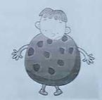

| 阅读理解（40分） |
阅读理解（共40分）
六、阅读下列短文，根据短文内容，从短文后各题所给的A. B. C. D四个选项中，选择最佳选项。（共30分，每小题2分）
A
Teenager Summer Programs and Prizes!
The Newton Public Library’s Summer Reading program has been a longtime favorite for local children. You are invited to check out any three books on July 16th to earn a free ticket to the movie of your choice at the Capital Theatre. In addition, there are also some other events for you to join. You can choose any one you like in your convenience.
Events for Teenagers
|
Musical Acting: A musical act, The High Crest, will be performed from 6 to 8 P.M. on Friday, July 22nd. The concert will be held outdoors on the library lawn and it is family-friendly. Blankets, lawn chairs, and picnics are encouraged! |
|
Craft making: Make earth-friendly crafts from recycled materials from 3 to 4 P.M. on Wednesday, August 10th. With guidance from a talented teacher, you will make new creations from everyday objects. Start recycle today, and bring objects to share with the group. |
|
Smartphone Using: Join our Public Services Librarian at 11 A.M. on Monday, July 25th, for an introduction to smartphone use. This small class is for beginners. Attendees should bring their phones, earphones and charging cords. Registration (注册) is required and spaces are limited. Please call 641-792-4108 to register. |
|
Stone Designing: Paint your own garden stones with your own imagination! At 6 P.M. on Monday, August 8th, Lisa Frasier will teach tips and skill for creating unique design on stones. All materials are provided, and registration is required. |
Any questions? Contact Public Services Librarian, Becca Klein at 641-792-4108.
（ ）41.To get a free ticket to a movie, how many books should you check out?
A. One. B. Two. C. Three. D. Four.
（ ）42. Where will the musical The High Crest be held?
A. On the library lawn. B. Inside the music hall.
C. On the stone floor. D. In the public library.
（ ）43. What should the attendees bring to learn to use the smartphones?
A. Tickets. B. Earphones. C. Chairs. D. Books.
（ ）44. If you are interested in painting on stone, you can go to ______.
A. Stone Designing. B. Craft Making.
C. Smartphone Using. D. Musical Acting
B
Cookie Monster
“Cookie Monster Christopher, you’d better watch out. You eat too many cookies, and bad things happen to little boys who do that!” Christopher’s mother shouted. Christopher turned a deaf ear to these warnings each and every time. Then at dinner, he once again didn’t react when his mother shook her finger at him.
Christopher went to bed with a belly full of cookies. Though he felt a little sick, he did not care — until morning. He woke up for school and planned to take a shower as usual. But when Christopher saw himself in the mirror, he could not believe his cookie-loving eyes. Christopher had turned into a giant chocolate chip cookie! He still had arms and legs and a head, but his whole mid-section was replaced with a flat, crumbly cookie! He was in a warm brown color with chocolate all over him.
When Christopher’s mother saw him, she simply shook her head and reminded him,” I told you so!” Then, she sniffed him and said, “Mmmm, you smell delicious!” and took a bite of him! At school, his science teacher, Ms Shortbread, broke off a piece of Christopher’s cookie body, too. Suddenly, Christopher’s whole class surrounded him in a circle, each wanting a bite of Christopher’s cookie body.
Christopher could hardly stop all the hungry people! And with every bite, Christopher’s cookie body was getting smaller and smaller. If this went on, there would be nothing left of Cookie Monster Christopher. When school ended, Christopher ran all the way home, followed by cookie-hungry classmates the whole way. He ran straight to his room, locked the door, and hid under the covers. He couldn’t afford to lose one more bite of his now-tiny cookie self.
The next morning, Cookie Monster Christopher opened his eyes. He found his dog licking his feet. “No, Oreo!” he shouted. Christopher had nearly forgotten that he was now a kind of delicious food, even to his own dog. Christopher threw the covers off and was about to run away from Oreo when he realized that he had a belly…the hips…and shoulders! He came back to himself again! Much to his relief, Christopher was no longer a cookie! Thank God!
After that, Christopher would never eat more than one cookie a day.
（ ）45. Christopher’s mother shouted at him because ______.
A. he didn’t take a shower as usual
B. he ate too many cookies that day
C. he didn’t wake up early for school
D. he ran to school without breakfast
（ ）46. What happened after Christopher woke up for school?
A. His dog was licking his feet
B. He got sick and was sent to hospital
C. His mother didn’t allow him to eat cookies
D. He found he had changed into a big cookie
（ ）47. When Christopher was at school, ______.
A. his cookie body was eaten up
B. the whole class cheered for him
C. his math teacher broke his cookie body
D. everyone wanted a bite of his cookies body
（ ）48. At the end of the story, Christopher felt ______.
A. unsatisfied. B. unworried. C. endangered. D. encouraged.
C
Color is an activity that children worldwide have long enjoyed. With a picture already made for them. Kids simply choose a crayon. Pencil or marker of their favorite color and fill it in. Today, it also becomes more and more popular among teenagers and even adults, who are enjoying relaxing hours of coloring. In December, five of the top ten best-selling books in the United States were coloring books.
They’re fun but are coloring books good for you?
The positive feedback from customers is encouraging. Trina Lucido, a popular artist creating coloring books, says that many of her customers are buying the coloring books for others who are sick or going through a rough time. She adds that the “big idea” behind her latest book is to encourage people to do something creative.
Lucido is right, according to Allan Rohan, a psychology professor. “Many customers appreciate coloring books as a new creative stage,” he said in an interview, “but what’s more important is that people spend time coloring in order to reduce (减少) stress after a long day.” Research shows that coloring can reduce stress by guiding people to focus on one simple task. When a person is filling in a flower with a light purple color, he focuses on the flower and forgets about all his troubles in life.
Experts add that coloring may relieve people from a certain king of pain. Doing the coloring helps people ease their mind and calm down. Also, coloring influences people’s brain in a healthy way. The shape of the drawing makes one side of the brain active, while the color of the drawing improves the other, Coloring can bring out your imagination and can take you back to your childhood. Interesting, isn’t it?
“It is very relaxing,” said Susan Jackson, a big fan of Lucido’s coloring books. “Any street just sort of falls away, Coloring frees my mind. And it’s not just try to fill blank pages. The pictures make me feel happy…and there is just something about them. So I’m saving the pictures I like best to the very end.”
（ ）49. Trina Lucido wants her coloring books to ______.
A. encourage people to be creative B. be one of the best-sellers
C. let people enjoy relaxing hours D. help develop friendship.
（ ）50. Why can coloring reduce stress?
A. Because it brings out imagination.
B. Because it shows the beauty of nature.
C. Because it helps people to be more focused.
D. Because it can take people back to childhood.
（ ）51. What can we learn from this passage?
A. Lucido’s coloring books are much-loved.
B. Coloring is an effective way to cure diseases.
C. Susan Jackson tries to save her colored pictures.
D. The shape and color of drawing do harm to our brain.
D
According to a recent newspaper article, girls do better than boys at every level of education. So it is hardly surprising that women are now far more likely than men to go to universities.
“Eclipsed” (黯然失色)
Mary Curnock Cook, a leader of the University and College Admissions Service, is so worried about the future of boys that she wants to see a national effort to solve the issue. If this differential growth carries on unchecked, girls born this year will be 75% more likely to go to university than their male peers (同伴).
So what is at the root of this gap? Are there changes in the nature of universities which have led to the dominance of women on campus? Are girls simply better at schoolwork these days, and boys less interested?
By the time teenagers get to their high school, girls are already greatly outnumbering boys. So before they sit a single exam, there are probably more girls than boys who are likely to go to university.
“Waste of time?”
The average grade for a girl is C+ compared to C for a boy at A-level examinations. But the differences between boys and girls start much earlier on.
According to a University of Bristol study, boys are nearly twice as likely as girls to have fallen behind by the time they start school. Primary schools often have more female teachers, and mothers helping out.
According to the study, girls and boys often have different attitudes towards schoolwork. The report says:”Boys are more likely than girls to regard school as a waste of time.” What’s more, boys tend to spend over one hour less per week on homework than girls. They are more likely to play computer games and less likely to read outside of school.
“There are a lot of boys thinking they can get away with the least work and wanting to spend their time doing other ‘more interesting things’,” says Roger Leighton, the former head teacher of Sydney Russell School. “Girls, on the other hand, tend to understand the need to work hard earlier on --- they take a longer view.”
（ ）52.Mary Curnock Cook wants to _______.
A. find out the cause for the difference
B. find out the number of girls on campus
C. see boys work harder than they used to
D. see people work together on the problem
（ ）53. The underlined word “dominance” in Paragraph 4 probably refer to “______”.
A. achievement in schoolwork B. position of advantage
C. progress in subjects D. control of attention
（ ）54. What can we learn from the passage?
A. Boy do better at some levels of education.
B. There are changes in the nature of universities.
C. Girls spend more time on schoolwork than boys.
D. Boys and girls perform similarly in primary school.
（ ）55. Which of the following is probably the best title for the passage?
A. Which is more attractive to students?
B. What do girls understand better than boys?
C. Why do more women than men go to university?
D. Who is more likely to do a better job in universities?
七、阅读短文，根据短文内容，从短文后的五个选项中选出能填入空白处的最佳选项。每个选项只能用一次。(共10分，每小题2分)
Four Things Teens should Do on Vacation
The teen years are filled with questions: What do I want to do with my life? Who will I be? How can I get there? ______(56), and the vacation is the best time for testing the waters. Here are some ways to help you experience smart vacation.
l Learn CPR (心脏复苏术) and first aid
______(57), but it’s better to prepared just in case. Sign up for a course through your local Red Cross. You can also order a CPR course through the Internet at home.
l ______(58)
Trying to get a job is a great experience for you. Going after
opportunities, dressing for the interview and learning to deal with turning down can be good for your future job-seeking.
______(59), so you might prefer to start your own business
whether you offer a service like babysitting or selling homemade products online.
l Volunteer
Volunteering is a great way for you to find your interest. It’s
important for you to decide what you want, you can be an extra pair of hands for a vet, or work for an outdoor theatre — as long as you are sure it will be a safe environment.
l Read and relax
Make sure you have enough time to relax, read, and have fun on vacation.
______(60), the vacation prepares you for life. In fact, how you spend your vacation can have a greater influence on your life than any school textbook ever will.
|
A. It is not easy for teens to get a job B. Get a job or start your own business C. If the school months prepare you for college D. You should think about your future and get prepared E. Nobody wants to have a reason to use life-saving skills |